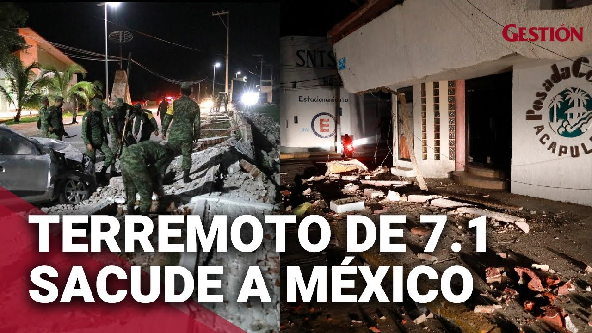

| Clasificado | Buscar | |||
|---|---|---|---|---|
| noticias | ||||
| video | ||||
| en vivo | ||||
| periodico | ||||
| peruquiosco | ||||
| Terremoto de magnitud 6,9 activa la alerta sísmica en México
El terremoto ocurrió con epicentro 81 kilómetros al sur de Coalcomán, Michoacán, donde también se suscitó el del lunes pasado, según el Servicio Sismológico Nacional (SSN)
Los residentes se paran en una calle después de un terremoto de magnitud 6.9 en la Ciudad de México el 22 de septiembre de 2022. (Foto de Pedro PARDO / AFP)
Un sismo de magnitud 6,9 activó este jueves la alerta sísmica en el centro de México como réplica tras el terremoto de magnitud 7,7 que sacudió al país el 19 de septiembre.
El terremoto ocurrió a las 1.16 (6.16 GMT) con epicentro 81 kilómetros al sur de Coalcomán, Michoacán, donde también se suscitó el del lunes pasado, según el Servicio Sismológico Nacional (SSN), que primero había registrado una magnitud de 6,5 y después ajustó a 6,9.
“Tuvimos una réplica del sismo con magnitud de 6,9 con epicentro en Coalcomán. Se sintió en Michoacán, Colima, Jalisco, Guerrero y Ciudad de México. Hasta ahora no hay reporte de daños”, escribió el presidente mexicano, Andrés Manuel López Obrador (AMLO), en sus redes sociales.
En Ciudad de México se activó la alerta sísmica, por lo que cientos de miles de ciudadanos salieron a las calles para protegerse del temblor.
El fenómeno ocurre tras el sismo que sacudió a México el lunes menos de una hora después del simulacro nacional que se realiza cada 19 de septiembre para conmemorar los terremotos de 1985 y de 2017, ocurridos en esta misma fecha y considerados los más destructivos de la historia reciente. Desde el último sismo del lunes, que dejó dos muertos y 10 heridos en el occidente de México, ha habido más de 1.000 réplicas, y se estima que la de este jueves ha sido la de mayor magnitud. El Gobierno de Ciudad de México activó protocolos de vigilancia, pero descartó daños hasta el momento. “Me informa Omar García Harfuch (secretario de Seguridad de la capital) que los cóndores (drones) que sobrevuelan la Ciudad no tienen registro de daños en la Ciudad, hasta el momento. Sigo informando”, indicó la jefa de Gobierno de Ciudad de México, Claudia Sheinbaum, en Twitter. Se espera más información oficial en la conferencia de prensa matutina del presidente López Obrador a las 7.00 hora local (12.00 GMT). Los sismos en septiembre han causado una conmoción en México, donde el temblor del 19 de septiembre de 1985 dejó un estimado de 20.000 muertos y el de 2017 cerca de 370. Un terremoto de 7,7 sacudió este lunes el centro de México, con saldo de un muerto, justo en el día de los aniversarios de los terremotos del 19 de septiembre de 1985 y de 2017. |  | |||
| LuciaBeizaga/YimmyRpdriguez/FrancoGomez | ||||